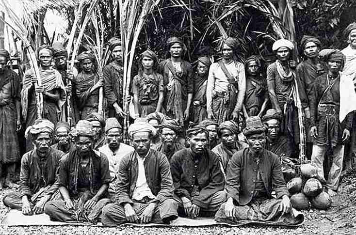

Gerakan Samin dikenal sebagai perlawanan damai terhadap penjajahan.
Para pengikutnya menolak pajak dan aturan kolonial tanpa kekerasan,
melainkan dengan keteguhan hati, kesederhanaan, dan kejujuran.
Hingga kini, ajaran Samin diwariskan sebagai nilai hidup penuh
kedamaian dan persaudaraan.
Ajaran lain yang masih terjaga di antara masyarakat adat suku Samin
adalah Sohaling Ilat yang berarti gerakan lidah. Ajaran ini mengajak
agar tidak berbicara sembarangan atau menjaga lisan agar tidak mengucapkan
kata-kata bohong yang dapat menyakiti perasaan orang lain.


Ajaran Saminisme menekankan hidup jujur, sederhana, dan tidak serakah.
Mereka percaya bahwa semua manusia adalah saudara dan wajib saling
menghormati. Nilai luhur ini tetap relevan di zaman modern,
mengingatkan kita bahwa kedamaian dimulai dari ketulusan hati.
Kebanyakan masyarakat adat Samin bekerja sebagai petani. Mereka enggan berdagang
karena khawatir dapat menipu orang. Bertani juga sebagai cara masyarakat adat Samin
untuk lebih dekat dan menysukuri nimat Tuhan. Menariknya, banyak dari keturunan Wong
Sikep ini tidak menempuh pendidikan formal. Mereka lebih memilih mengajari anak-anaknya
sendiri. Hal itu dilakukan agar keturunan masyarakat adat Samin tetap memegang budaya luhur mereka.